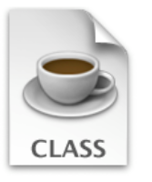
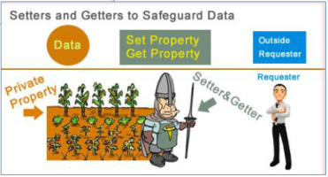
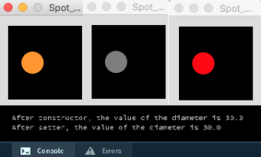

Behaviour in Classes

classes · methods · behaviour · overloading · validation · this
Classes and Objects

classes · encapsulation · access modifiers · accessors · mutators
Lab-08

classes · methods · behaviour · overloading · validation · this · encapsulation · access modifiers · accessors · mutators